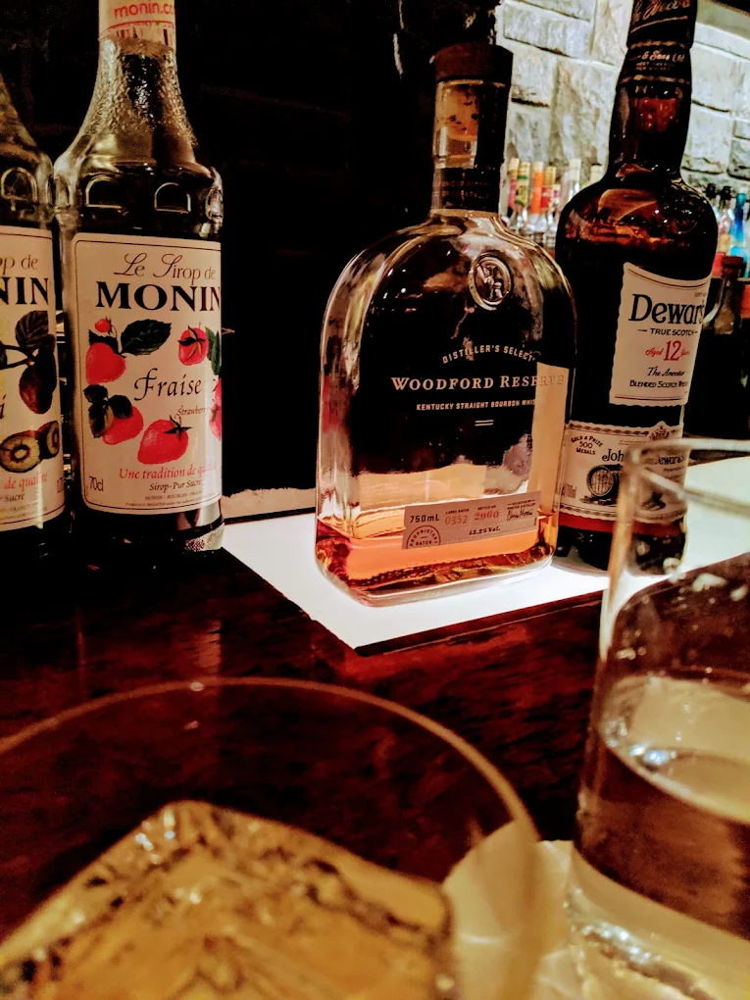
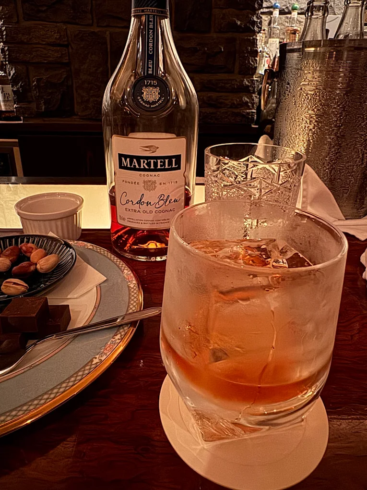
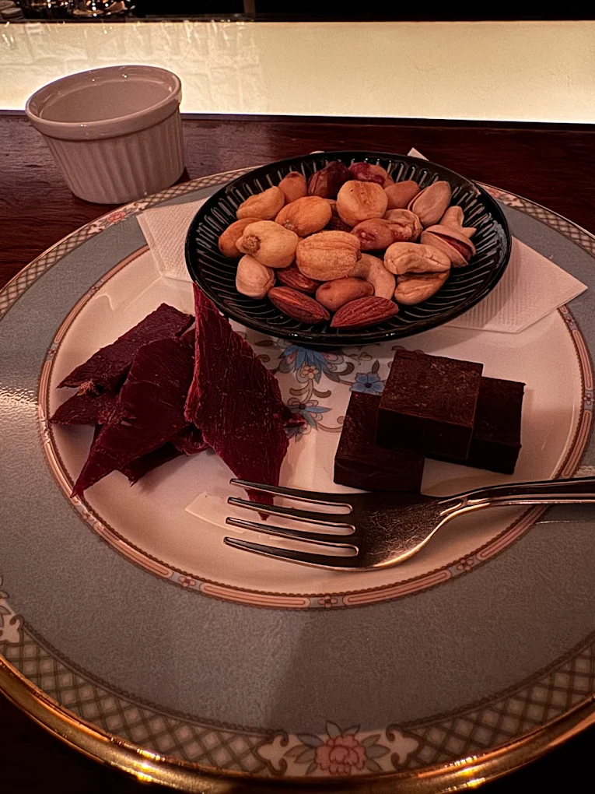

「YOSHINOBAR」
名古屋市中区錦
※東山線・鶴舞線-伏見駅から徒歩3分



Googleマップの評価「星４.４」
1985年の創業、大切な日には一押しの高級感のあるバー
高級感溢れる雰囲気に、店内は広くキャバクラのようなブース席がある。
雰囲気とは裏腹に値段は相応といった設定がされており、メニューの量はここまで紹介した店の中でもトップクラスに多い。店員の数もバーにしては大人数であり、注文の際にメニューについて質問しても迷惑にならなさそうなところは安心感を感じる。
調べてもらえば店内の雰囲気がより理解してもらえるだろうが、経営者やビジネスパーソンなどへの接待でも使えるので、社会人としてこの店を覚えておいて損はないだろう。相手をもてなしたい、ちょっと背伸びしたいときにはここを選ぶのは良い選択だ。
「店舗所在地」
| 住所 | 〒460-0003 愛知県名古屋市中区錦２丁目１０−２６ 水野ビル ２階 |
|---|---|
| TEL | 052-220-2447 |
| URL | instagram.com |